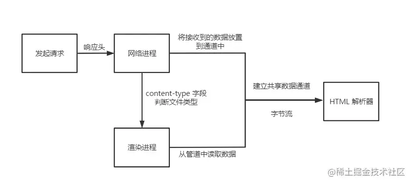
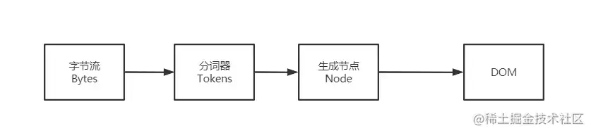

说说你对 Dom 树的理解
参考答案
什么是 DOM
从网络传给渲染引擎的 HTML 文件字节流是无法直接被渲染引擎理解的，所以要将其转化为渲染引擎能够理解的内部结构，这个结构就是 DOM。
DOM 提供了对 HTML 文档结构化的表述。
在渲染引擎中，DOM 有三个层面的作用：
- 从页面的视角来看，DOM 是生成页面的基础数据结构。
- 从 JavaScript 脚本视角来看，DOM 提供给 JavaScript 脚本操作的接口，通过这套接口，JavaScript 可以对 DOM 结构进行访问，从而改变文档的结构、样式和内容。
- 从安全视角来看，DOM 是一道安全防护线，一些不安全的内容在 DOM 解析阶段就被拒之门外了。
简言之，DOM 是表述 HTML 的内部数据结构，它会将 Web 页面和 JavaScript 脚本连接起来，并过滤一些不安全的内容。
DOM树如何生成
HTML 解析器（HTMLParser）： 负责将 HTML 字节流转换为 DOM 结构。
那么网络进程是如何将数据传给HTML解析器的呢？

从图中我们可以知道，网络进程和渲染进程之间有一个共享数据通道，网络进程加载了多少数据， 就将数据传给HTML解析器进行解析。
HTML解析器接收到数据（字节流）之后，字节流将转化成DOM，过程如下：

有三个阶段：
1、通过分词器将字节流转化为Token。 分词器先将字节流转换为一个个 Token，分为 Tag Token 和文本 Token。
注意，这里的Token并不是我们之前理解的Token，这里就是一个片段。
2、Token解析为DOM节点。
3、将 DOM节点添加到DOM树中。
JavaScript影响DOM的生成
我们知道，JavaScript可以修改DOM，它也会影响DOM的生成。
1、内嵌 JavaScript 脚本 比如我们嵌入了一段<script>标签的代码，之前的解析过程都一样，但是解析到script标签时， 渲染引擎判断这是一段脚本，此时 HTML 解析器就会暂停 DOM 的解析， 因为接下来的 JavaScript 可能要修改当前已经生成的 DOM 结构。
暂停解析之后，JavaScript 引擎介入，并执行<script>标签中的这段脚本。 脚本执行完成之后，HTML 解析器恢复解析过程，继续解析后续的内容，直至生成最终的 DOM。
2、引入 JavaScript 文件 基本上跟之前是一致的，不同点在于，暂停解析之后执行JavaScript 代码，需要先下载这段 JavaScript 代码。
- DOM 树 是文档的结构化表示，包含了文档的所有元素、属性和文本节点。
- 操作 DOM 是通过 JavaScript 对页面内容进行动态修改和控制的基础。
- 了解 DOM 树 的结构和操作可以帮助开发者更有效地处理网页的动态内容和交互。